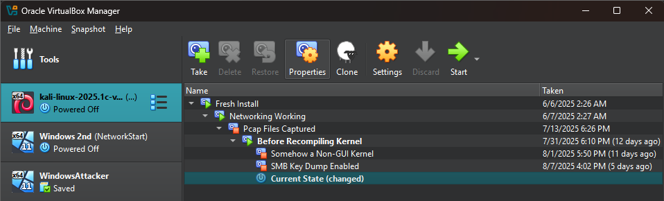
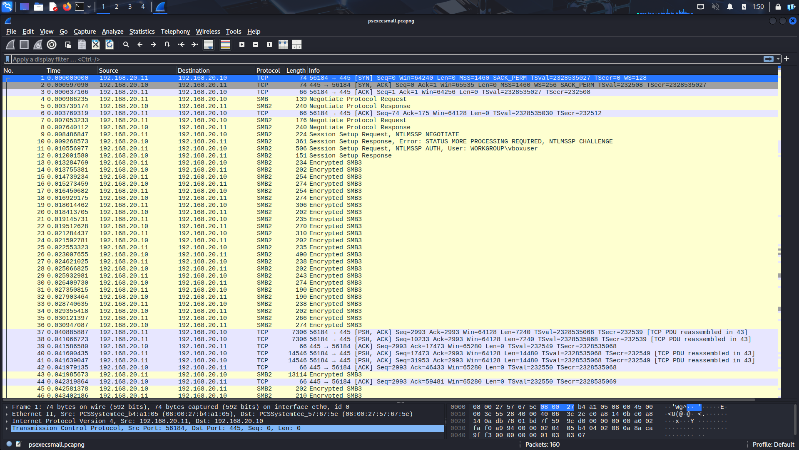
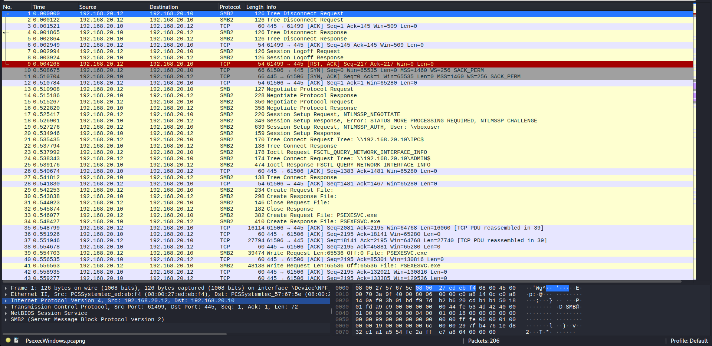
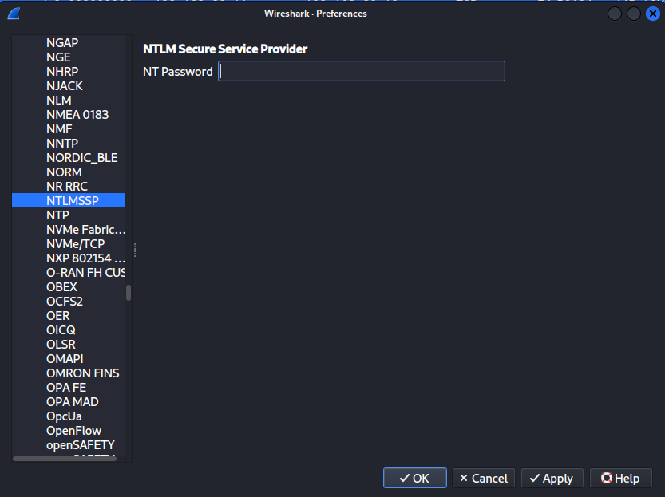
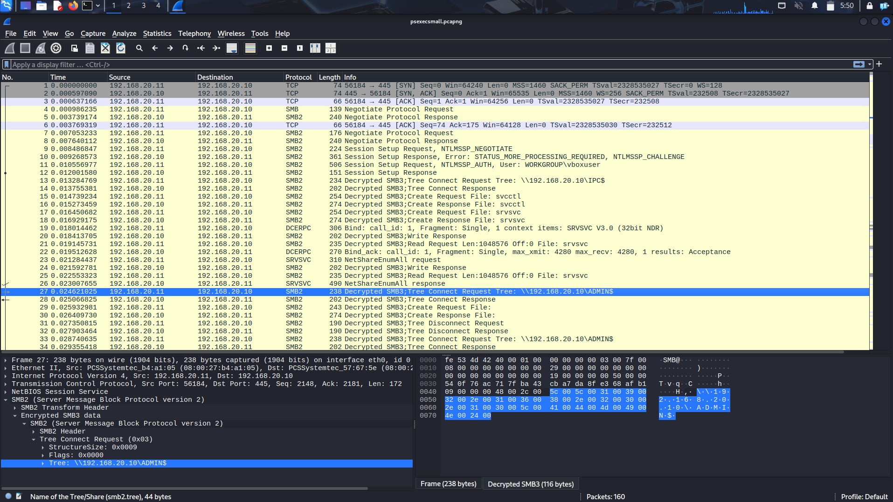

The Suricata Project
The Goal
So, before we get too deep into what exactly I did, I should lay out what the goal was. My objective was to learn more about networking and cybersecurity. Specifically, it was recommended to me by some people in the industry to learn more about generating alerts with Suricata, in order to detect network-based attacks. Specifically, I was interested in detecting the tools of psexec and secretsdump, though most of the work focuses more on psexec.
The Setup
So, how did I setup everything? To start, I had two different VirtualBox instances, one setup on Kali Linux and the other setup on Windows. The Windows machine was setup to be the target machine, and the Kali machine the attacker. Later, I would add another windows machine as an attacker. All of these machines where setup on an internal network with eachother in order to minimize the risk of my main machine getting infected with anything.
The Start
After doing that, I executed the psexec and secretsdump attacks with Impacket against my Windows VM. I then captured the packets using Wireshark. The results of doing this on psexec are shown below.
At this time, I didn't realize that the SMB3 encrypted packets would be a problem, and was doing my best to detect TCP packets going on port 445. To do so with Suricata was rather easy, just requiring the following alert
Alert tcp any any -> any 445 (msg:"TCP on port 445!";)
Where tcp is the protocl, the three any's don't impose any restrictions on the sender's ip, the port the sender is sending from, and the recivers IP respectively. It then logically follows that 445 is the port of the reciever. the words after msg are what will be displayed when people later look at the logs. This works pretty well, but obviously isn't specific to either attack! Anything, even non-malicious programs can send packets to that port, and we're currently getting in many many alerts rather than just the one or two we'd prefer. It would be better if we could be more specific with what we're filtering for. This led me to filter instead by the 1st SMB1 packet as it only happens once per attack during the negotiation process, and is a reasonably reliable indicator of when a new connection is being established. To do this, use the filter of
Alert tcp any any -> any 445 (content:" |FF 43 4D 42|"; offset:4; depth:4;)
Where the | indicates searching the binary content of the packet and filters for SMB1 packets, while offset:4; depth:4; is a tightening of the search to make it only search where TCP places the protocol used. This works, and it works well, but it does not differentiate between Psexec and secretsdump. In order to do this, I'm going to use a quirk i've found in psexec. It will frequently send out TCP packets of 10,000+ bytes, so we can detect these packets after an SMB packet was sent, and know if a psexec or secretsdump attack happened! The alert for this is a bit more complicated.
alert tcp any any -> any 445 (msg:"SMB1 to port 445 alert"; content:"|FF 53 4D 42|"; xbits:set,psexec,track ip_pair, expire 2; offset:4; depth:4;)
alert tcp any any -> any 445 (msg:"psexec attack on port 445 alert"; xbits:isset,psexec,track ip_pair; dsize:>10000; content:!"|53 4D 42|"; offset:5; depth:3;)
Alright, that's a long two alerts, so let's break them down! xbits is just a way for us to let check for conditions that happen later and the rest of the conditions with it don't really matter here. In this case, we're just checking to make sure an SMB1 connection happens. Then, whenever we detect a TCP packet we see if our previous alarm has been tripped recently (within 2 seconds, this is the expirely field) using xbits. If so, we check that the packet isn't an SMB packet (because SMB packets could potentially be quite large) before finally creating the alert.
Now, the Encryption Problem
This last approach does work, and works well, but it doesn't actually rely on anything too foundational for the attacks. It's almost certainly possible to edit the TCP packets to not set off our second alarm, and our first alarm will be set off anytime some connects with SMB! You might as well disable SMB at that point! We'd like to try and track something a little bit more foundational than packet types and sizes. In order to do that, we need a set of unencrypted packets. To do so, we will setup another windows VM and use a Psexec implementation by Sysinternals to attack our old windows machine. The output of which looks like this.
Looking through this with a bit of knowledge gained by trying to make this attack work, I know that the tree connection to \ADMIN$ in packet 24 is pretty instrumental in making this whole thing work, so I'll write a little alert to trigger when we see that request happening.
alert smb any any -> any 445 (msg:"Psexec unencrypted attack"; content:"|41 00 44 00 4d 00 49 00 4e 00 24|"; offset:76; depth:48;)
If you decrypt the binary, it should say "A D M I N $", which is the share the malicious program is trying to connet to (with spaces added in for due to SMB doing that for some reason), this is probably something that is way more reasonable to flag as malicious than what we were doing before, as we won't trigger the alarm everytime someone connects to an SMB share outside our organization. Notably, though, it does have some limitations in that it cannot detect encrypted SMB traffic. You may notice that this request has a different offset and depth than many of the previous ones. This is due to the fact that the position of this data varies slightly when varying the ips these packets are sent to.
Failing at Decrypting SMB3
At this point I had gotten fairly far and I wanted to make sure that I wasn't wrong in my assumptions and that our previous encrypted SMB3 packets actually did contain the same connection to ADMIN$. To do so, I found a handy tutorial on how Wireshark could decrypt SMB3 packets here where I perused and found that all I really had to do was enable something called "CIFS_DEBUG_DUMP_KEYS"! Easy right? Wrong. This required me to recompile the Linux Kernel and edit a config setting in the .config file, something that I thought would be fairly simple (It's changing exactly 1 option from "not set" to "y" on a Linux Kernel, which people compile like, daily.) and turned out to be extremely hard (please tell me why there's well-known bugs with the configuration file prompting you for a y/n response and taking it as a filepath?) and each unsuccessful debug required up to 6 hours in order to recompile the kernel and try again with a few tweaks. Eventually, though, I managed to compile the kernel with the correct setting enabled! Only to realize it would not work as expected. You see, CIFS is a particular utility in Linux that Impacket does not use. This means that while the new option does enable you to dump the keys for SMB connections made through it (and subsequently give them to Wireshark for decryption) it does not allow you to do so for utilities like Impacket.
Succeding at Decrypting SMB3
After this, I looked online, and found a signifigantly easier way of decrypting the packets I had missed previously.
You see, when wireshark's NTLMSSP's protocol setting are provided a good passcode, wireshark will automatically decrypt your SMB (provided you have the initial TCP handshake)
and, if you look closely, you can see the same ADMIN$ request as we had previously! This means that our detection method would work if you enforced SMB2 on your computers, or if you could somehow decrypt the traffic before feeding it to suricata. Also to note, secretsdump also does the same connection, and will be caught by this alarm as well.
At this point I had done about everything I set out to do, and was about out of time, so, that'll be all for my foray into this topic. Perhaps there's some better ways I could have done detection for the encrypted version of this problem, and I almost certainly could have found a something better to settup my unencrypted alarm, but I had run out of time for expirements due to school starting up, so I had to shelve the project, at least till next summer.